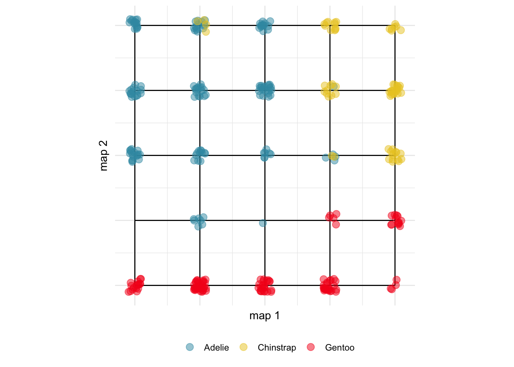

library(kohonen)
library(aweSOM)
library(mulgar)
library(dplyr)
library(ggplot2)
library(colorspace)
load("data/penguins_sub.rda")
set.seed(947)
p_grid <- kohonen::somgrid(xdim = 5, ydim = 5,
topo = 'rectangular')
p_init <- somInit(as.matrix(penguins_sub[,1:4]), 5, 5)
p_som <- som(as.matrix(penguins_sub[,1:4]),
rlen=2000,
grid = p_grid,
init = p_init)9 Self-organizing maps
A self-organizing map (SOM) is constructed using a constrained \(k\)-means algorithm. A 1D or 2D net is stretched through the data. The knots, in the net, form the cluster means, and the points closest to the knot are considered to belong to that cluster. The similarity of nodes (and their corresponding clusters) is defined as proportional to their distance from one another on the net. Unlike \(k\)-means one would normally choose a largish net, with more nodes than expected clusters. A well-separated cluster in the data would likely be split across multiple nodes in the net. Examining the net where nodes are empty of points we would interpret this as a gap in the original data.
A self-organising map is like a fisherwoman’s net, as the net is pulled in it catches the fish near knots in the net. We would examine the net in
- 2D to extract the fish.
- high-dimensions to see how it was woven through the space to catch fish.
Figure 9.1 illustrates how the SOM fits the penguins data. SOM is not ideal for clustered data where there are gaps. It is better suited for data that lies on a non-linear low-dimensional manifold. To model data like the penguins the first step is to set up a net that will cover more than the three clusters. Here we have chosen to use a \(5\times 5\) rectangular grid. (The option allows for a hexagonal grid, which would make for a better tiled 2D map, but this is not useful for viewing the model in high dimensions.) Like \(k\)-means clustering the fitted model can change substantially depending on the initialisation, so setting a seed will ensure a consistent result. We have also initialised the positions of the knots using PCA, which stretches the net in the main two directions of variance of the data, generally giving better results.
The resulting model object is used to construct an object containing the original data, the 2D map, the map in \(p\)-D, with edges, and segments to connect points to represent the next using the f_som() function from mulgar. The 2D map shows a configuration of the data in 2D which best displays the clusters, much like how a PCA or LDA plot would eb used.
p_som_df_net <- f_som(p_som)
p_som_data <- p_som_df_net$data %>%
mutate(species = penguins_sub$species)
p_som_map_p <- ggplot() +
geom_segment(data=p_som_df_net$edges_s,
aes(x=x, xend=xend, y=y,
yend=yend)) +
geom_point(data=p_som_data,
aes(x=map1, y=map2,
colour=species),
size=3, alpha=0.5) +
xlab("map 1") + ylab("map 2") +
scale_color_discrete_divergingx(
palette="Zissou 1") +
theme_minimal() +
theme(aspect.ratio = 1,
legend.position = "bottom",
legend.title = element_blank(),
axis.text = element_blank())The object can also be modified into the pieces needed to show the net in \(p\)-D. You need the data, points marking the net, and edges indicating which points to connect to draw the net.
library(tourr)
# Set up data
p_som_map <- p_som_df_net$net %>%
mutate(species = "0", type="net")
p_som_data <- p_som_data %>%
select(bl:bm, species) %>%
mutate(type="data",
species = as.character(species))
p_som_map_data <- bind_rows(p_som_map, p_som_data)
p_som_map_data$type <- factor(p_som_map_data$type,
levels=c("net", "data"))
p_som_map_data$species <- factor(p_som_map_data$species,
levels=c("0","Adelie","Chinstrap","Gentoo"))
p_pch <- c(46, 16)[as.numeric(p_som_map_data$type)]
p_col <- c("black", hcl.colors(3, "Zissou 1"))[as.numeric(p_som_map_data$species)]
animate_xy(p_som_map_data[,1:4],
col=p_col,
pch=p_pch,
edges=as.matrix(p_som_df_net$edges),
edges.col = "black",
axes="bottomleft")

map 2 direction is primarily distinguishing the Gentoo from the others, and map 1 is imperfectly distinguishing the Chinstrap from Adelie. The map in the data space shows how it is woven into the shape of the data.The SOM fit, with a \(5\times 5\) grid, for the penguins has the data clustered into 25 groups. This doesn’t work as a clustering technique on its own, if we remember that the data has three clusters corresponding to three species of penguins. Using species to colour the points helps to see what SOM has done. It has used about seven nodes to capture the separated Gentoo group. These are mostly in the map 2 direction, which means that this direction (like a direction in PCA) is useful for distinguishing the Gentoo penguins from the others. The other two species are mixed on the map, but roughly spread out on the direction of map 1.
Exercises
- Fit an SOM to the first four PCs of the
aflwdata. Examine the best solution (you choose the size of the net), and describe how the map lays out the data. Does it show offensive vs defensive vs midfield players? Or does it tend to show high skills vs low skills? - Fit an SOM to the first 10 PCs of the
fake_treesdata, using your choice of net size. How well does the map show the branching structure? - Examine a range of SOM nets fitted to the first 10 PCs of the
fake_treesdata in the 10D space using a tour. Set the values ofrlento be 5, 50, 500. How does the net change on this parameter? - Plot the distances output for the SOM fit to the penguins data. Mark the observations that have the 5 biggest distances, and show these in a tour. These are the observations where the net has fitted least well, and may be outliers.